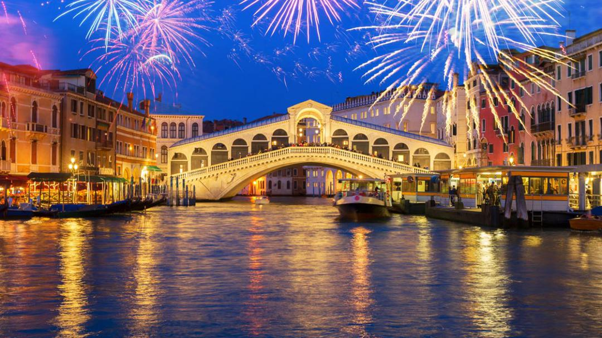

VENISE
Venise, La Serenissime
Surnommée la reine de l'ADRIATIQUE pour sa situation geographique ou encore la cité des ponts en raison des 438 ponts que compte actuellement la ville ,VENISE est aussi la serenissime REPUBLIQUE de Venisse,ancienne thalassocratie d'italie constituée au MOYEN AGE.


La Tour de Prise
LA tour de pise,en italie,est un campanile,c'est-à-dire le clocher d'une cathédrale,architecturalement séparé de cette derniére et destinée à abriter les cloches. Elle est construite,en marbre,dans un style roman.La tour de pise ne doit sa celebrité ni à son style ,ni à sa hauteur de 58metres,mais à son inclinaison.Quasiment dés sa construction,en 1173 ,la tour commença à pencher.trois etages seulement avaient alors été batis. Successivement,les architectes en charge du chantier dècidérent d'edifier les derniers étages en diagonale,afin d'essayer de compenser l'oscillation de la tour.ce fut peine perdue car le degré d'inclinaison de la tour continua de s'accentuer ,meme aprés la fin des travaux en 1372Carnaval de Venise
LE CARNAVAL DE VENISE,avec ses masques traditionnels et enigmatique, a lieu aussi chaque année ;cepedant notre trés chère ville a du faire une pause de 2ans a cause de la pandemie de covid et repris cette année avec force d'ou les extraits dans la video suivante